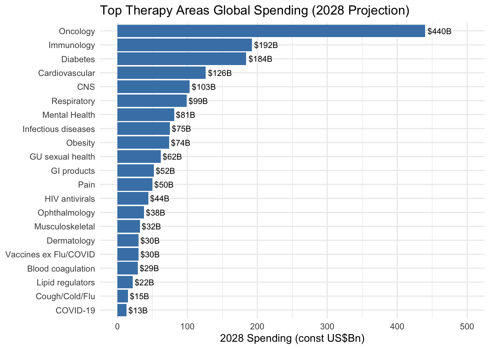
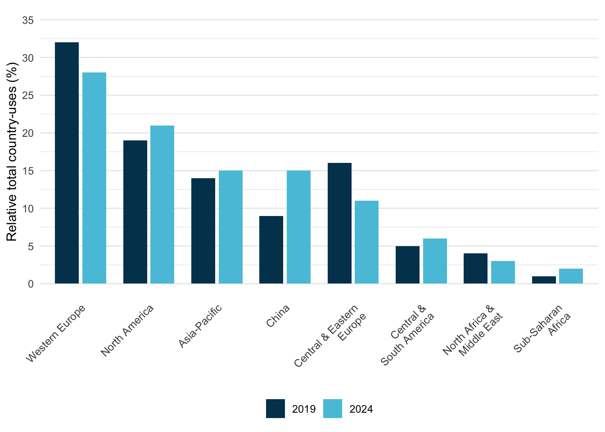
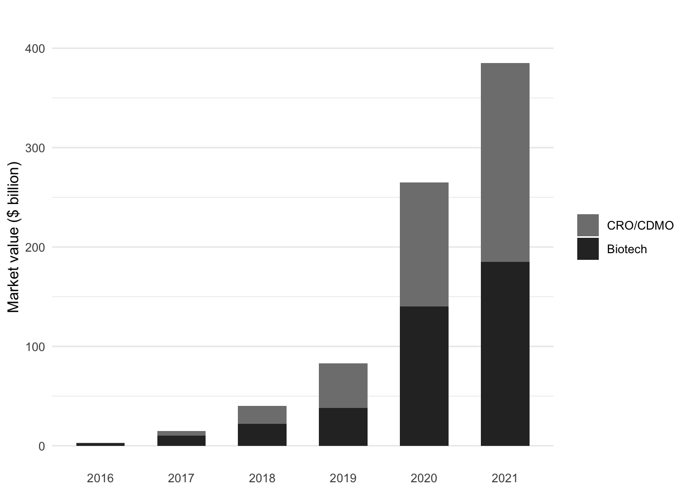

6 Economics of a Trial
Clinical trials are expensive. A single Phase III trial can cost $50-400 million; a large cardiovascular outcomes trial can exceed $1 billion. Bringing a new drug to market (accounting for the trials that fail along the way) requires an estimated $2.2-2.6 billion in capitalized investment over 10-15 years (Deloitte estimates $2.2B; the Tufts CSDD study estimates $2.6B) (Deloitte Centre for Health Solutions 2025; DiMasi, Grabowski, and Hansen 2016). While historical success rates were approximately 10%, recent data shows a composite success rate of 6% in 2023, which increased to 7% in 2024, driven by improvements in Phase III (IQVIA Institute for Human Data Science 2025).
These economics shape every decision in drug development. They explain why companies pursue some diseases and not others, why trials are increasingly conducted in lower-cost regions, why sponsors outsource to CROs rather than build internal capabilities, and why small biotechs partner with large pharma rather than go it alone. Understanding who pays, who profits, and who bears risk is required for anyone working in clinical research, because the science does not happen in isolation from the money.
Several distinct types of organizations participate in the clinical trial ecosystem, each driven by unique economic incentives. Pharmaceutical and biotechnology sponsors fund the vast majority of research, viewing trials as critical investments that must yield approved products and eventually drive revenue. Much of this work is outsourced to Contract Research Organizations (CROs), which provide specialized services ranging from study design to data management, a market that has grown to over $80 billion annually (Grand View Research 2024). CROs are also the dominant purchasers of clinical trial software, accounting for over 37% of that market’s end-use (Grand View Research 2025). The trials themselves are conducted at clinical sites, such as hospitals and private practices, which are compensated for their resources and staff time. Supporting this core infrastructure are numerous specialized vendors providing everything from laboratory processing to data capture software. Finally, patients remain the primary participants; while they are often altruistic or hope for therapeutic benefit, they also bear significant personal costs (including travel expenses and time away from work) that are frequently invisible in formal trial budgets.
6.1 The Cost Structure
Clinical trial costs have escalated dramatically in the last two decades. While earlier estimates (in the early 2000s) pegged the total cost of bringing a drug to market at $800 million, modern analysis paints a starker picture.
Stratospheric R&D Costs
While the $2.2 Billion Benchmark is widely cited, it often underestimates the full economic burden of modern development. Recent analysis from the Deloitte 2025 report reveals a slight rebound in productivity, with a forecast Internal Rate of Return (IRR) of 5.9% (up from 4.3% in 2023), driven by the entry of high-value assets like GLP-1 agonists into late-stage pipelines (Deloitte Centre for Health Solutions 2025). However, the average cost to develop a drug from discovery to launch has risen to $2.23 billion ($2,229 million), with the top 20 biopharma companies spending $7.7 billion on terminated trials for assets that failed during the 2024 analysis cycle alone. Average forecast peak sales per asset have also increased to $510 million, though excluding obesity therapies (GLP-1s) would drop this benchmark to $370 million (Deloitte Centre for Health Solutions 2025).
When accounting for post-approval R&D, required manufacturing scale-up, and the increasing complexity of global regulatory submissions, the true lifecycle cost of a novel asset often exceeds $2.8 billion (Deloitte Centre for Health Solutions 2025; DiMasi, Grabowski, and Hansen 2016). This figure includes:
- Out-of-pocket costs: The actual cash spent on both successful and failed projects.
- Cost of failure: The heavy investment in the approximately 93-94% of compounds that never reach the market, based on composite success rates of 6-7% (IQVIA Institute for Human Data Science 2025). For the scientific drivers of phase-by-phase attrition, see Chapter 5.
- Cost of capital: The opportunity cost of tying up billions in investment over a 10-15 year development horizon.
These widely cited cost estimates have been challenged in the academic literature. Avorn (2015) argued that the Tufts CSDD methodology overstates true development costs by including a large opportunity-cost-of-capital adjustment and by relying on confidential, self-reported industry data that cannot be independently verified. An alternative analysis by Prasad and Mailankody (2017), using publicly available data from oncology companies that brought a single drug to market, estimated the median out-of-pocket R&D cost at $648 million ($757 million once capitalized at a 7% cost of capital), roughly one-third of the comparably capitalized Tufts figure. The debate remains unresolved because true R&D expenditures are proprietary, and methodological choices (which costs to include, how to allocate shared overhead, what discount rate to apply) drive large differences in headline figures. What is clear is that any single cost-to-market number should be interpreted with attention to the assumptions behind it.
These escalating costs create a “stratospheric” financial barrier that shapes the entire industry’s risk profile. Sponsors must not only fund the successful drug but also provide enough “economic cover” for the nine others that failed, a reality that drives the extreme pressure on clinical trial timelines and success rates.
Costs vary significantly by phase, driven by protocol complexity and enrollment size. Phase I trials, focused on safety in small cohorts (20-80 participants), typically cost $4-10 million with high per-patient costs due to intensive PK/PD sampling. Phase II trials (100-300 participants) typically cost $20-50 million. Phase III definitive efficacy trials (1,000-3,000+ participants) typically cost $50-400 million and can exceed $1 billion for large cardiovascular or vaccine outcome trials.
A granular view of operational costs reveals the pressure of daily burn rates. The direct cost to operate a standard Phase II/III trial is approximately $40,000 per day (Z. P. Smith, DiMasi, and Getz 2024). The opportunity cost of a delay is larger still: for a newly launched drug, a lost day of sales now averages roughly $800,000 (about a fifth of the $4-5 million per day long assumed from 1990s blockbusters), rising by therapeutic area to a median of $1.3-1.4 million per day for cardiovascular and hematology products (Z. Smith, DiMasi, and Getz 2024). This financial pressure drives the immense emphasis on timelines.
6.2 How AI and Automation Can Change Trial Economics
If the economics of development are dominated by timelines and failure, then the economic value of AI is primarily indirect: it comes from shifting when and how confidently sponsors make decisions, and from reducing high-friction operational work that does not add scientific value.
The most expensive failure is the late failure. When Phase III fails, years of work and hundreds of millions of dollars are already sunk, and the “cost of failure” must be recovered by the few programs that succeed (DiMasi, Grabowski, and Hansen 2016). AI cannot eliminate biological uncertainty, but it can support earlier termination of low-probability programs by improving evidence synthesis across preclinical, translational, and early clinical signals, especially when combined with more structured protocols and better data integration. Even modest improvements in decision timing can have large economic consequences because capital is tied up for a decade or more, and because time-to-market directly affects expected returns (Deloitte Centre for Health Solutions 2025).
The second lever is timeline compression: sponsors concentrate effort on the steps that dominate calendar time and generate large amounts of administrative work. Enrollment delays are a canonical example, because feasibility errors, inefficient patient identification, and retention failures can drive substantial schedule slippage and therefore opportunity cost (Lamberti et al. 2024). Protocol amendments are another: they trigger IRB/ethics resubmissions, re-consent, electronic data capture rebuilds, and supply-chain re-forecasting, and substantial changes can cost hundreds of thousands of dollars once downstream disruption is accounted for (Getz et al. 2016; Tufts Center for the Study of Drug Development 2021). Finally, monitoring and data cleaning can become a “long tail” of repetitive query generation, verification, and follow-up, motivating risk-based quality management (RBQM) approaches that concentrate effort where it changes outcomes (Association of Clinical Research Organizations 2025).
In this framing, AI-enabled tools create economic value mainly by automating classification, triage, and routine drafting (such as document indexing, query suggestion and clustering, and standardized narrative scaffolds) so that expert time is shifted from low-information coordination to higher-judgment work. The intended outcome is not the removal of expertise, but a reduction in coordination overhead and a reduction in the reconciliation debt that delays interim decisions and final reporting.
Internal Discovery vs. External Acquisition
The R&D model for large pharmaceutical companies has shifted decisively toward external innovation. According to the Deloitte 2025 report, 61% of assets in the late-stage pipelines of the top 20 biopharma companies are now externally sourced through mergers, acquisitions, and licensing agreements (up from 59% in 2023) (Deloitte Centre for Health Solutions 2025). This trend reflects a strategy of “bolt-on” acquisitions to offset looming patent expiries and the offshoring of early-stage risk to smaller, more agile biotech firms. However, this reliance on external assets introduces its own risks: externally sourced assets are consistently more likely to be terminated in late-stage development compared to those developed in-house (14% vs 12% termination rate in 2024), often due to misaligned strategic fit or unforeseen data inconsistencies discovered during integration (Deloitte Centre for Health Solutions 2025).
The Shift Toward Rare Diseases and High-Value Targets
Financial returns are also increasingly concentrated in specialized therapy areas. In 2024, 37.4% of late-stage assets were focused on rare diseases (orphan indications), a significant increase from 31.1% in 2023. This reflects the industry’s pivot toward precision medicine and high-unmet-need populations, where regulatory pathways may be faster and pricing power is greater. However, this focus has led to extreme concentration: Oncology alone accounts for 37% of all late-stage assets, leading to intense competition for trial sites and eligible participants (Deloitte Centre for Health Solutions 2025). These categories are not mutually exclusive, since many oncology assets also carry orphan designations.
Shifting the cost structure: labor vs. software and governance
Automation does not “remove” cost; it changes its composition. Some labor costs can decline (less manual reconciliation and administrative follow-up), while software, integration, validation, and oversight costs increase. In regulated settings, sponsors must budget for governance: validation of computerized systems, audit trails, monitoring of model performance, and clear accountability for errors (U.S. Food and Drug Administration 2023a; National Institute of Standards and Technology 2023).
Over time, this shift may change how services are bought. If routine work becomes more software-mediated, CRO margins based on manual throughput are pressured, while differentiated value moves toward execution excellence, specialized expertise, and quality systems that can demonstrate control and traceability. The clinical trial software market, growing at over 10% annually and projected to reach nearly $29 billion by 2033, reflects this shift toward technology-mediated operations, with cloud-based delivery now dominant (Grand View Research 2025).
At a macro level, these forces sit on top of a long-run increase in global R&D spend and a recognition that both time and attrition dominate the economics of development.
Table 6.1 illustrates the current annual global R&D spend, which has grown from ~$55 billion in 2005 to over $260 billion by 2025.
| Metric | 2005 Estimate | 2025 Estimate |
|---|---|---|
| Avg Cost to Market | $800 Million | ~$2.23 Billion |
| Global R&D Spend | $55 Billion | >$260 Billion |
| Phase I Success | ~60% | ~48% |
| Phase III Success | ~50% | ~54% |
Therapeutic area dramatically influences cost. Oncology trials are among the most expensive, driven by complex protocols, specialized imaging and biomarker testing, and extended survival follow-up. Neurology and cardiovascular trials are similarly costly. Dermatology and infectious disease trials tend toward the lower end of cost ranges. Table 6.2 illustrates projected global pharmaceutical spending by therapeutic area through 2028, and Figure 6.1 visualizes the top therapy areas by projected 2028 spending.
| Therapeutic Area | 2024-2028 Projected Spending | Key Trends |
|---|---|---|
| Oncology | $440B by 2028 | Largest therapeutic area; novel mechanisms (cell/gene therapy, ADCs) now account for 35% of oncology trials in 2024 (IQVIA Institute for Human Data Science 2025) |
| Immunology | 2-5% CAGR through 2028 | Growth slowing due to biosimilar competition (adalimumab, ustekinumab) |
| Diabetes/Metabolic | $184B by 2028 | Massive growth in obesity trial starts (+77% in 2024 compared to 2023), with 173 medicines in development or marketed (IQVIA Institute for Human Data Science 2025) |
| Neurology (CNS) | $103B by 2028 | Continued investment in Alzheimer’s, Parkinson’s, and rare neurological diseases |
| Cardiovascular | Moderate growth | Established market with incremental innovation |
| Infectious Disease | Variable | Pandemic preparedness and antimicrobial resistance driving investment |
The Globalization of Clinical Trials
Geography is a primary driver of cost. Per-patient costs in the United States can be several times higher than in countries like India (Glickman et al. 2009). A Phase III trial that might cost $50,000 to $100,000 per patient in the U.S. might cost $15,000 to $25,000 per patient in India.
These cost variations reflect fundamental differences in healthcare systems and medicine utilization patterns. Per capita medicine use varies dramatically by region: Western Europe and Japan average 1,150-1,200 defined daily doses per capita, compared to North America’s 800 doses per capita, despite North America having the highest GDP per capita. Eastern Europe demonstrates over three times higher medicine use per capita than China, despite GDP per capita being only 50% higher. These disparities stem from differences in healthcare system structure, reimbursement policies, patient cost-sharing requirements, and disease burden, all of which directly influence both trial site selection and per-patient costs (IQVIA Institute for Human Data Science 2024).
This cost differential, combined with the need for large patient pools, has driven a massive shift toward global participation. Historical analysis by Glickman et al. (2009) in the New England Journal of Medicine documented this transition, noting that industry-sponsored Phase III trials were increasingly being conducted at sites outside the United States. At that time, more than half of all Phase III study sites (13,521 of 24,206) were located ex-U.S., with approximately one-third of trials conducted solely outside the United States (Glickman et al. 2009). The economic driver was stark: a first-rate academic medical center in India charged approximately $1,500-$2,000 per case report, less than one-tenth the cost at a second-tier U.S. center (Glickman et al. 2009).
The globalization of research raises significant scientific and ethical questions. Glickman et al. highlighted concerns regarding the generalizability of trial results, noting that geographically distinct populations can have different genetic profiles that affect drug safety and effectiveness. For example, more than two-thirds of 42 genetic variants associated with pharmacologic response show significant frequency differences between persons of African ancestry and those of European ancestry. Differences in medical infrastructure and physician training are often not transparently reported, making it difficult to assess whether standards of care are consistent across regions. Ethically, the “translation” of results is complicated by the fact that many drugs tested in developing countries never become readily available or affordable there after approval, potentially violating the principle that research should be responsive to the health needs of the host community (Glickman et al. 2009).
Recent data from IQVIA (2025) quantifies the magnitude of these regional shifts (Figure 6.2). China’s share of global trial country-uses grew from 9% in 2019 to 15% in 2024, a 66% increase that moved it from fifth to fourth place globally, just behind Asia-Pacific as a whole.

The Regional Pivot: The Rise of China
The modern era of clinical development has seen China emerge as a major force in a now multi-polar innovation ecosystem. According to IQVIA (2025), China now accounts for 30% of all global trial starts by headquarters location, up from just 1% in 2009 (IQVIA Institute for Human Data Science 2025). Independent data corroborates this trajectory: China-sponsored trial registrations grew from 1,333 cumulative studies in 2009 to over 32,500 by 2018, a 24-fold increase (Xu, Dong, and Liu 2020). China has now approached the United States (35% in 2024) and surpassed Europe (21%) in terms of trial initiation volume.
This growth in trial activity reflects substantial capital investment. The market value of publicly listed Chinese biopharma innovation players grew from $3 billion in 2016 to over $380 billion by July 2021, a 127-fold increase in five years (Figure 6.3). China’s share of the global innovation pipeline grew from 4.1% in 2015 to 13.9% in 2020, and clinical trial applications from Chinese companies grew at an average of 32% per year from 2016 onward (Han et al. 2021).

The composition of this growth is notable: CRO/CDMO companies (contract research and manufacturing organizations) grew from a negligible base to represent over half of the total market value by 2021, reflecting both the outsourcing trend and China’s emergence as a global services hub for clinical development. This dual growth (in both innovative drug development and clinical services infrastructure) positions China as both a source and destination for clinical trial activity.
However, a distinction remains between where a company is headquartered and where its trials are physically conducted. While Chinese emerging biopharma companies (EBPs) are prolific, Chinese companies ran 83% of their trials domestically between 2020 and 2024 (IQVIA Institute for Human Data Science 2025). In contrast, Western sponsors remain heavily tethered to U.S. and European site networks for global regulatory submissions.
This geographical expansion is also occurring against a backdrop of shifting capacity. As discussed in Chapter 18, the number of unique U.S. investigators declined by 78% between 2020 and 2024, and new trial starts fell sharply following a post-pandemic peak (WCG Clinical 2024). This suggests that while trial activity is geographically broader, the absolute density of the global investigative environment is under significant strain.
Budgeting Checklist
Successful budgeting requires a granular understanding of costs. The following checklists (Table 6.3 and Table 6.4), adapted from Beal et al. (2004) regarding industry-sponsored trials, outline the key direct and indirect costs that sites must anticipate.
| Category | Direct Cost Considerations |
|---|---|
| Study Startup | Staff training time, Site initiation visit attendance, IRB preparation & submission fees, Amendment processing |
| Personnel | PI oversight, Coordinator time, Research assistants, Data entry, AE reporting, Monitor visits |
| Lab & Procedures | Phlebotomy supplies, Specimen processing/shipping, Dry ice, Biohazard fees, Radiology/Imaging fees, ECGs |
| Pharmacy | Drug storage, Preparation (compounding), Dispensing, Accountability logs, Destruction/Return |
| Patient Costs | Stipends/Reasonable reimbursement, Travel/Parking, Meals, Overnight stays (if required) |
| Administrative | Record storage (long-term), Copying/Scanning supplies, Courier fees, Archiving |
| Category | Indirect Cost Considerations |
|---|---|
| Institutional Overhead | Often a fixed % (e.g., 20-30%) covering rent, utilities, building maintenance |
| Administrative Support | Payroll processing, Accounting/Invoicing, Legal review, Purchasing/Procurement |
| Infrastructure | Equipment depreciation (freezers, centrifuges), IT support/Network access, Communication (phones/internet) |
NoteBudget Line Items for Decentralized Trials and Digital Endpoints
The shift toward decentralized elements and digital endpoints changes not only operations but also the cost structure. Sponsors and sites increasingly incur costs for computerized systems, integration work, validation and oversight, and vendor-managed data flows, costs that are distinct from traditional per-visit procedure budgets (U.S. Food and Drug Administration 2024b, 2023c, 2023a). Quality management also remains a material cost driver: Meinert (2013) noted that there is “reason for concern” when quality assurance and control are allocated less than 10% of total direct costs, reflecting a long-standing operational reality that quality is purchased through discipline and oversight rather than assumed.
Common incremental line items include:
- eConsent and participant communication tooling: platform licensing, configuration, accessibility review, and staff training (U.S. Food and Drug Administration 2016, 2024a).
- DHT/device operations: device procurement, provisioning, support, replacement rates, data transmission, and device data monitoring (U.S. Food and Drug Administration 2023c).
- Data integration and transfer management: interface build, testing, reconciliation, and sustained change control for vendor pipelines (U.S. Food and Drug Administration 2023b, 2024a).
- Remote monitoring enablement: secure remote source access solutions, redaction workflows where applicable, and expanded centralized monitoring analytics (U.S. Food and Drug Administration 2024b; International Council for Harmonisation 2025).
- Validation and governance: computerized system validation/qualification efforts, audit trail review capacity, and inspection readiness drills (U.S. Food and Drug Administration 2023a, 2024a).
6.3 How Money Flows
The sponsor sits at the center of the financial web, paying out to everyone else.
When a sponsor hires a CRO, the CRO’s fee typically includes a management margin. Public financial data shows typical gross margins of 40-50%, with operating margins typically ranging from 6-16% (Grand View Research 2024). The CRO payment covers:
- project management
- site monitoring
- data management
- biostatistics
- regulatory affairs
- medical monitoring
- quality assurance
Clinical procedures (laboratory tests, imaging, specialized assessments) typically represent 15-22% of the CRO budget (Prorelix Research 2024). Site monitoring accounts for 9-14%, project management 8-12%, and data management 5-10%.
The CRO, in turn, pays many vendors. Central laboratories are paid per specimen processed. Electronic data capture companies charge licensing fees and per-patient or per-site fees. Interactive response technology vendors charge for randomization and drug supply management. Each service generates revenue for the vendor and represents a pass-through cost (plus CRO margin) to the sponsor.
Sites receive payments from sponsors or CROs based on negotiated budgets. The site budget covers investigator time, coordinator time, overhead, and study-specific procedures. Starting a new clinical trial site costs the sponsor $20,000 to $75,000 or more (Prorelix Research 2024), covering site selection, regulatory submissions, staff training, and infrastructure setup.
Site payments are typically structured around per-patient or per-visit fees. A site might receive $3,000 for screening a patient, $500 for each study visit, and defined amounts for specific procedures. Sites also receive payments for protocol amendments, additional monitoring burden, and other non-standard activities.
Trial budgets calculate per-subject payments by mapping protocol procedures to specific visits. One-time activities, such as obtaining informed consent or reviewing medical history, are typically billed at the screening visit. Recurring activities (physical exams, vital sign collections, and laboratory tests) are usually billed at every study visit. Specialized assessments like ECGs or pharmacokinetic (PK) sampling occur only at designated intervals. Finally, the sponsor pays professional fees to the investigator (PI) and a coordinator fee to the site for each visit conducted, with the total per-subject budget representing the sum of these procedural and professional components across the screening period, treatment visits, and the final end-of-study assessment.
In addition to per-subject costs, sites negotiate start-up fees to cover the administrative burden of opening the trial. These often include regulatory document preparation, contract negotiation, pharmacy setup, source document creation, and archiving fees for long-term record storage.
The money that reaches sites must cover substantial costs. Personnel time (investigators, coordinators, nurses, regulatory staff) is the largest expense. Administrative and regulatory costs (IRB submissions, informed consent development, training) add up. Medical procedures, laboratory costs, and participant reimbursements (meal stipends, travel allowances) are often paid from site budgets.
6.4 The CRO-Site Relationship
The relationship between CROs and sites is economically fraught and often strained.
CROs are accountable to sponsors. Their business depends on meeting sponsor timelines, controlling costs, and delivering quality data. Sites are focused on patient care and, increasingly, on the operational challenges of running a clinical research enterprise. These priorities can conflict.
Communication breakdowns are common. Industry surveys indicate that over half of sites are dissatisfied with how communication is handled (Tufts Center for the Study of Drug Development 2021). Sites report repeating the same information to multiple CRO contacts, dealing with fragmented decision-making, and feeling disconnected from sponsors.
Contracting processes are frequently delayed and inefficient. The involvement of multiple parties (sponsor, CRO, legal departments, institutional offices) creates layers of bureaucracy that slow trial startup. Sites may wait months for executed contracts and first patient payments.
High staff turnover at CROs compounds these problems. When CRO personnel rotate frequently, sites must continuously re-educate their contacts about the trial and their capabilities. Inexperienced CRO staff may not understand protocol requirements, leading to errors that sites must correct.
The economic tension is fundamental: CROs control payment flow to sites but are paid based on sponsor satisfaction. Sites feel squeezed between CRO cost pressures and the realities of delivering quality research. This structural tension underlies many operational conflicts.
6.5 Where the Money Actually Goes
Understanding the ultimate destination of trial spending reveals the economic impact of clinical research.
In 2023, the biopharmaceutical industry spent over $30 billion directly at clinical trial sites across the United States, generating more than $62 billion in total economic activity (Pharmaceutical Research and Manufacturers of America 2024). These expenditures support jobs (investigators, coordinators, nurses, regulatory staff, administrators) and purchase goods and services from local economies.
CROs employ hundreds of thousands of people globally. The industry supports specialized vendors, technology companies, and service providers. Academic medical centers derive substantial revenue from clinical research, which supports teaching and infrastructure beyond the trials themselves.
For sponsors, trial costs are investments against uncertain future returns. A development program that costs $1 billion may never yield an approved product: the majority do not. Those that succeed must generate enough revenue to cover not only their own development costs but the costs of failed programs.
The oft-cited figure of $2.6 billion to bring a new drug to market (from a Tufts University study) reflects this reality: the average cost includes capitalized R&D expenditures and the cost of failure. For an individual successful program, out-of-pocket costs are lower, but sponsors must fund many programs to achieve a few successes. This high cost of failure increasingly drives larger pharmaceutical companies to license assets later in the development cycle, shifting much of the early-phase risk, and the majority of trial activity, onto Emerging Biopharma (EBP) companies (IQVIA Institute for Human Data Science 2025).
6.6 Patient Economics
Patients bear costs that are often invisible in trial budgets.
While investigational drugs and many study procedures are covered, patients face out-of-pocket expenses for travel, parking, meals, and accommodations. In early-phase oncology trials, nearly half of patients (48%) report monthly out-of-pocket costs of at least $1,000 (Huey et al. 2021). These costs fall disproportionately on patients with lower incomes and those who live far from trial sites.
Time costs are also substantial. Participation requires clinic visits, sometimes frequent ones. For working patients, this means time away from jobs. For patients with caregiving responsibilities, it requires arranging coverage. These costs are real even if they do not appear in any budget.
The emergence of decentralized trial elements (home visits, remote monitoring, direct-to-patient drug shipment) addresses some of these burdens but introduces new logistical challenges and costs.
6.7 Funding Interims and Portfolio Management
Interim analyses are usually framed as scientific tools, but they also serve a financial one: deciding whether to commit capital to the next stage of a program. This section distinguishes the funding interim from its scientific counterpart, then turns to the metric funders actually rely on, the predictive probability of success.
Administrative Interim Analyses
A funding interim (also called an administrative or financial interim analysis) is a pre-specified analysis of accumulating trial data conducted specifically to trigger an investment decision, not to change trial design or stop enrollment. The distinction from a scientific interim is essential: a scientific interim (for futility, efficacy, or dose selection) changes something about the trial. A funding interim changes nothing about the trial at all. It simply answers a binary question for an external funder: “Has the pre-specified threshold been met?”
The mechanics are straightforward. The trial protocol specifies that an independent statistical group will perform a blinded or unblinded analysis when a defined number of patients have completed follow-up. That group delivers a checkbox (yes/no) to the sponsor and to the funder under a non-disclosure agreement. The criterion is typically based on predictive probability of trial success, described below. The funder uses the checkbox to decide whether to commit capital to complete the trial; if the threshold is not met, the funder may decline to invest but the trial continues unchanged under its original protocol.
The critical naming convention is not semantic: calling this analysis a “futility” interim creates a regulatory problem, because futility implies that failing the analysis triggers a protocol change. An administrative analysis that changes nothing does not require the same pre-specification, alpha-allocation, and regulatory disclosure as a scientific futility analysis. Sponsors should use “administrative analysis” or “financial analysis” in the protocol and charter, and clearly distinguish it from any scientific interim planned.
This design solves a structural problem in smaller biotech development. A company that can fund the Phase II portion of a seamless Phase II/III program may need external capital to fund the Phase III expansion. A standalone Phase II trial requires a gap between studies (unblinding, data readout, fundraising, regulatory interaction) that adds roughly a year or more to the development timeline and costs additional months of patent life. A seamless design with a built-in funding checkpoint can eliminate that gap, with the funder committing based on the interim checkpoint result.
Predictive Probability of Success as a Funder’s Tool
The funding criterion is almost always some form of predictive probability of success (PPoS), the probability that the trial will achieve statistical significance at the planned final analysis, given the data accumulated so far (Marion et al. 2025). This is distinct from power, which is fixed at design time based on an assumed effect size and does not change as data accumulate. PPoS does change with interim data: it rises as the treatment effect looks larger than assumed, falls as it looks smaller, and can swing dramatically depending on what the data show. The full statistical treatment is at Section 12.7.1.
For funders, PPoS is intuitive in a way that p-values and confidence intervals are not. Investment decisions are probability-based: a funder is, in effect, buying a lottery ticket with a stated probability of a payoff. A 70% PPoS at the time of the funding checkpoint means that, given the available data, there is a 70% probability the trial will be statistically successful at the final analysis. This is the natural framing for investors who think about expected value and risk-adjusted returns. Even large pharmaceutical companies use internal PPoS calculations as portfolio-management tools for deciding which Phase III programs to continue and which to terminate.
A common communication failure is demanding that PPoS equal power. “We need 90% predictive probability” as a funding criterion means the funder needs to see, at halftime, that the team is 90% likely to win by the required margin. That is an extraordinarily high bar mid-trial, far higher than is typically achievable without an enormous interim effect size. The practical solution is to show funders example data presentations (Kaplan-Meier curves, hazard ratios, mean differences) and work backward to the PPoS associated with each one, building intuition for what a “fundable” interim result looks like.
Assurance and Portfolio Optimization
Assurance (sometimes called Bayesian predictive probability of success) extends the PPoS concept from trial execution to program planning (O’Hagan, Stevens, and Campbell 2005). Where PPoS conditions on the accumulated data at a specific interim time point, assurance is computed before the trial starts, averaging the probability of a successful outcome over the uncertainty in the true treatment effect. The distinction: power assumes a specific true effect size and computes the probability of observing a significant result under that assumption. Assurance integrates over a distribution of plausible true effects and computes the average probability of a successful outcome across that distribution.
For portfolio management, assurance is the more relevant quantity. A Phase III program powered at 85% for an assumed hazard ratio of 0.80 sounds high, but if the sponsor’s internal evidence places substantial uncertainty on whether the effect is 0.70 or 0.90, the assurance (averaged over that uncertainty) might be 55-60%. Portfolio managers who optimize based on power alone are systematically overestimating the probability of success for their programs; assurance provides a more realistic forecast.
Assurance calculations also make uncertainty transparent in a useful way. A program team that disagrees about the likely effect size can run assurance under both assumptions and see how dramatically the probability of success changes. This is more productive than arguing about which single effect size to assume for power.
6.8 Platform Trial Economics
The economic case for platform trials (described in detail at Section 13.6) can be summarized as a reduction in cost per scientific question answered. When sponsors each build separate Phase III programs for drugs targeting the same disease, approximately half of the enrolled patients receive placebo across all programs simultaneously, generating information only about the control-arm trajectory rather than about any experimental treatment. A platform with a shared control arm redirects those patients to experimental arms, substantially reducing the total number of patients required to answer each question while maintaining statistical power (Saville and Berry 2016).
The benefit is not just in patient count. Platform infrastructure (site contracts, databases, regulatory submissions, DSMBs, monitoring infrastructure) represents a substantial fixed cost that scales with the number of programs in parallel. Amortizing this fixed cost across multiple arms makes the per-arm cost of subsequent arms a fraction of the cost of a standalone trial. REMAP-CAP investigated many therapies across its multiple treatment domains over its lifespan; each of those questions would have required years of infrastructure development if approached as a standalone trial.
The first-arm problem is the primary economic barrier to platforms. The sponsor of the platform’s first arm bears the full fixed cost of building the arena before any amortization benefit materializes. This means platforms in academic or disease-advocacy settings (Healey ALS, I-SPY 2, SNAP) typically require philanthropic or government funding for the first arms; once the platform is proven, commercial sponsors engage at much lower marginal cost. This structural challenge explains why perpetual platforms have succeeded most readily in conditions with strong advocacy communities or NIH investment, while diseases without those resources remain served primarily by standalone trials.
6.9 Strategic Implications
The largest economic levers in a trial are rarely the per-procedure line items. They are the decisions about which programs to fund, when to stop them, and how to share fixed infrastructure across scientific questions.
For sponsors and their funders, this argues for judging programs on assurance rather than power: a program powered at 85% can carry a true probability of success closer to 55-60% once uncertainty in the effect size is taken into account, and stopping such a program early (or structuring a seamless design with an administrative funding checkpoint) protects far more capital than any procedure-level negotiation. For CROs, differentiated value is moving from manual throughput toward execution excellence and the quality systems that can demonstrate control as routine work becomes software-mediated. For sites, financial viability depends on budgeting that captures the indirect and administrative costs (Table 6.4) that per-visit fees routinely miss, so that negotiated compensation actually covers personnel and infrastructure. And for the patients at the center of the enterprise, designs that move cost off the participant are both an ethical obligation and, increasingly, an advantage in recruitment and retention.